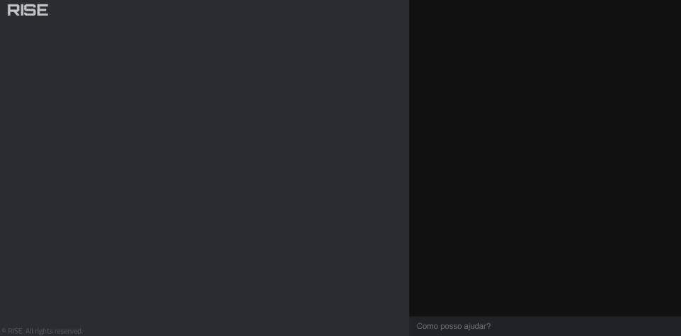
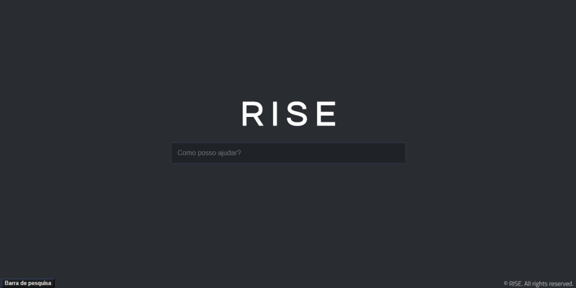
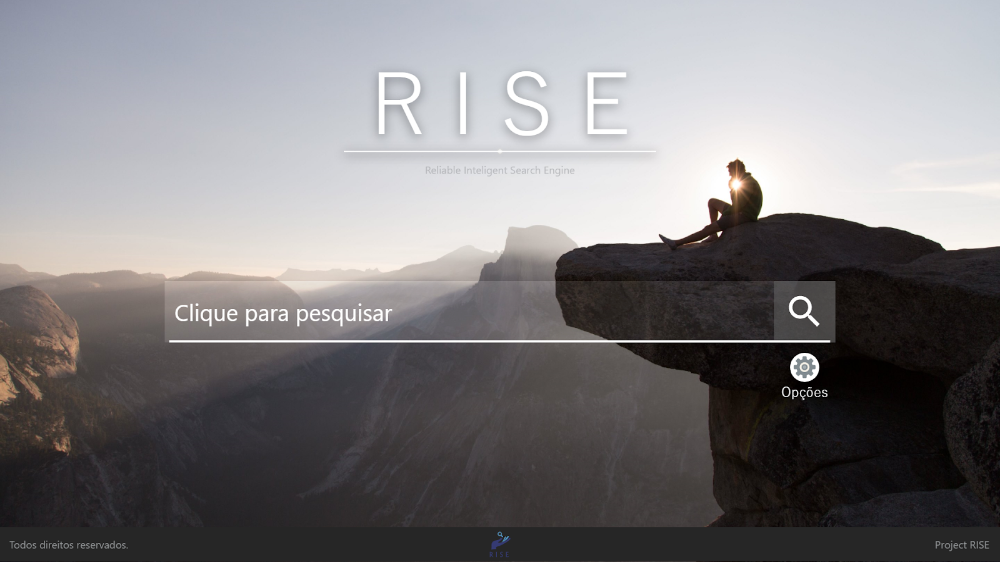
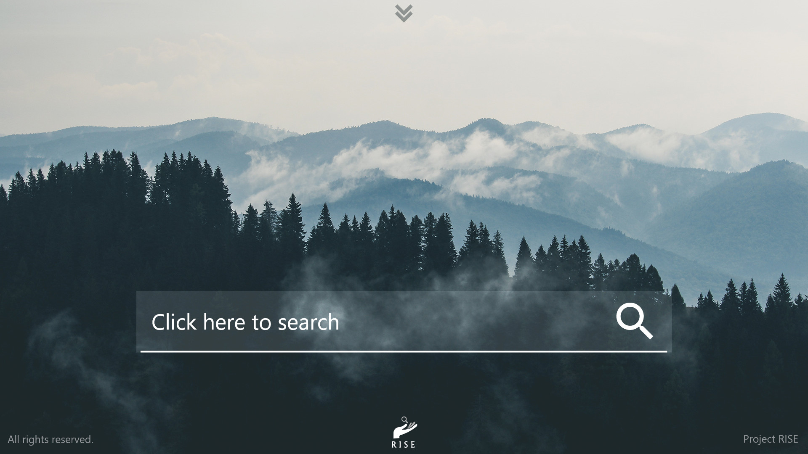

Trabalho de Conclusão de Curso apresentado ao Curso Técnico em Informática para Internet Integrado ao Ensino Médio da
Escola Técnica Estadual Vasco Antônio Venchiarutti como requisito parcial para a obtenção do título de Técnico em Informática para Internet.
Reliable
Intelligent
Search
Engine
Com embasamento na ideia que inteligências artificiais ajudam a realizar tarefas,
o projeto trata dos mesmos propósitos, buscando melhorias de acessibilidade em pesquisas
realizadas em mecanismos de busca, sabendo da existência de uma certa dificuldade em usufruir
de todas as ferramentas que o mecanismo oferece.
A primeira versão apresentada do site não aparentou ser agradável o suficiente.

Primeira versão de desenvolvimento

Segunda versão de desenvolvimento
Após alguns testes feitos, foi tomada a decisão de que esta versão não seria a final,
devido suas falhas de desenvolvimento, baixa estabilidade e qualidade da interface.

Primeira versão da página de pesquisa
A partir disso, foi iniciada a criação da segunda versão do site, onde iria apresentar um novo modelo,
de forma mais moderna e equilibrada, sendo mais agradável e simples.

Segunda versão da página de pesquisa
Por fim, tomou-se novamente que esta versão não seria a mais funcional e seria melhor utilizar algo mais simplificado e chamativo.